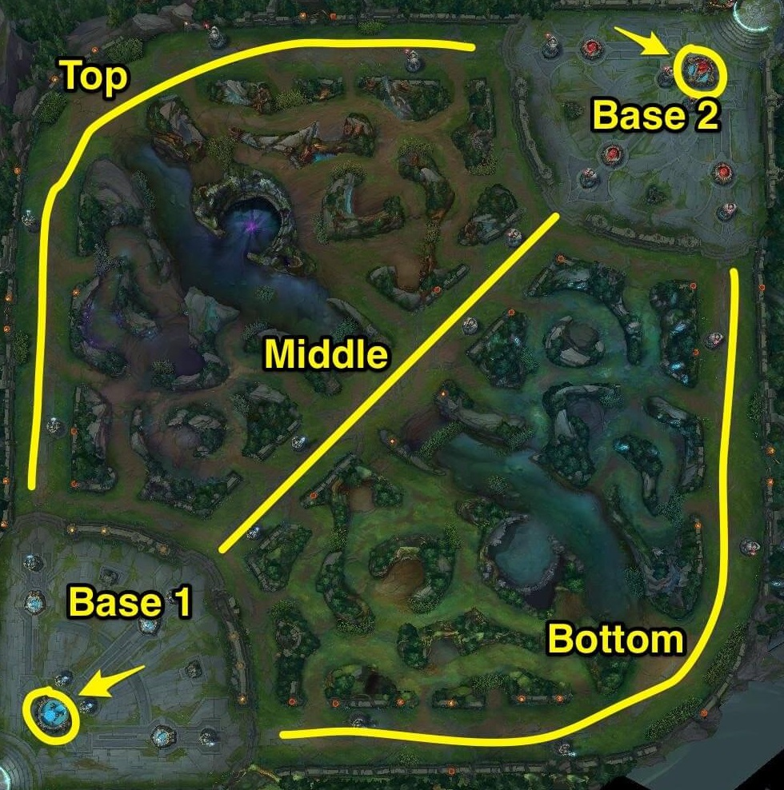

Learn More

ADC
The abbreviation stands for Attack Damage Carry which already has a lot of sense in the title itself. This position in League of Legends, aka Marksman, is made for eliminating certain targets. The strength of the character, first of all, comes from the items that improve the damage rate. ADC champions make the most damage to the enemy team but at the same time suffer from low health and defense rate. Basically, the player sacrifices all their abilities in order to bring as much damage as possible to the opponent, especially at the end of the battle. At the same time, Marksman farms the game in order to buy items needed.
TOP
Bruiser and Tank champions are taking the top lane among League of Legends roles. Tanks, for example, are used to lock enemies down and let the team start a fight. They also can help to protect weaker players thus eliminating damages from the enemy team. Bruiser has a combination of damage and tanking skills. This role is more effective at the beginning of the battle as it eliminates as many enemies as possible and later protects members of the team.
MIDDLE
These characters are playing a role similar to Top Laners - handling anything that might happen on the lane. It is usually held by Assassins and APC. The first champions specialize in killing high-value targets. The main goal of Assassin is to catch the best moment to reach its victim. They act like real hunters. Mid laners in general combine basics of each role in LoL. They are also the only players besides Jungler who can influence different parts of the map.
JUNGLE
These players are taking the position in between 3 main lanes on the LoL map, aka ‘jungle’. The main goal is to get as much gold and experience points as possible. Jungler helps players to control the main areas of the map. They also build their own economy by collecting the gold and XP which allows starting ganking. As a jungler, the player should check all available gank opportunities on the map and take advantage of them asap.
SUPPORT
Players of the Support role most of the time help the ADC. It is probably the ultimate role which determines the result of the battle. One of the main goals is to have a crowd-control that might be game-changing for the whole team. Thanks to Support, ADC is protected while trying to attack the main target and Jungler gets more vision for collecting gold. Support players are kind of an airbag module that ensures that the battle for the team goes smoothly and with no trouble.
Know More
If you wish to know more about the game created by Riot Games®, visit
https://na.leagueoflegends.com/en/game-info/